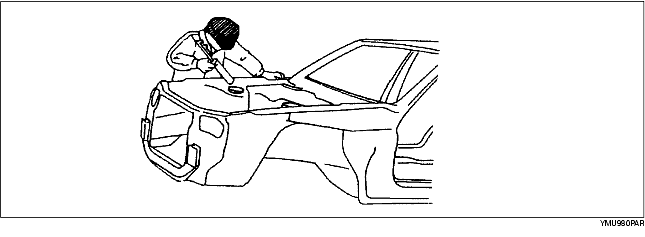
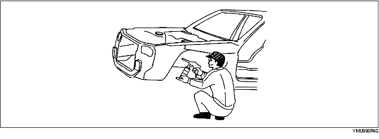
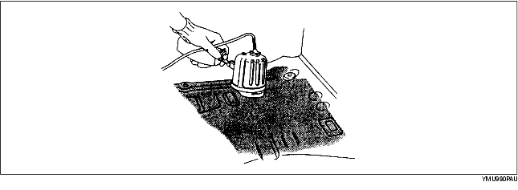

• Applicera karosstätning där det behövs.
• För platser där det kan vara svårt att komma åt efter montering, kan tätningen utföras före monteringen.

• Applicera underredsskydd på de ställen där det behövs på karossen.

• Applicera rostskydd (vax, olja etc.) på baksidan av svetsområdena.
• Applicera golvdämpning genom att hetta upp dämpmaterialet med en infraröd lampa.
